Cartas Gantt tipográficas en Typst, con un editor visual de escritorio:
escribís YAML, ves la carta en vivo y exportás a PDF, SVG, MS Project y Primavera P6.
Todo local, sin nube ni licencias.
Tauri v2 + React
Preview WASM (typst.ts)
Librería gantt.typ sin paquetes externos
0 dependencias de red
◂ ▸ para navegar · F pantalla completa · Todas las imágenes de esta presentación fueron generadas por la app.
Cómo funciona
datos.yamltareas + config:
→
CodeMirroreditor con foco en línea
→
main.typgenerado desde el menú (42 parámetros)
→
typst.ts · WASMpreview SVG < 500 ms
→
typst CLIexport PDF nativo
Un solo lenguaje de datos: el mismo YAML alimenta el preview (wasm), el PDF (CLI) y los exports a planificadores.
Mapeo exacto fila ↔ línea: el clic en el dibujo salta al YAML y el clic derecho abre las propiedades de esa actividad.
La librería es además un paquete @local/gantt usable sin la app, desde cualquier .typ.
Editar es chatear con el dibujo
Clic sobre una fila → salta a su línea en el YAMLanclado al texto real de la carta: sin corridos, ni con grupos ocultos
Clic derecho sobre una fila → panel de propiedadesedita fechas, avance, formato o costos de esa actividad sin buscar su línea
Clic derecho sobre una fecha → calendario para elegirla
Zoom con Ctrl+rueda, mínimo “ajustar”; paneles redimensionables
Colapsar / Expandir niveles; pestañas con Nuevo, Abrir, Guardar y MSPDI

Plan de 31 actividades en 3 niveles — preview en vivo del editor.
El archivo manda: config: + campos por actividad

Todo viene del YAML: título, colores, filas y columnas desde config:; barras en rayas / contorno / gradiente; “Subcontractistas” oculta por actividad.
config: reemplaza los defaults — un argumento explícito del .typ sigue pudiendo más